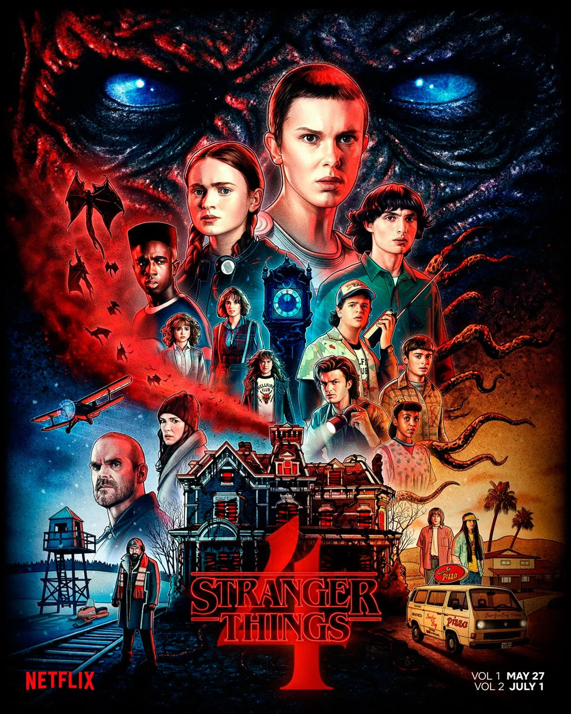

Sigue las vidas de un grupo de amigos mientras lidian con fenómenos sobrenaturales en su pequeño pueblo.
Los hermanos Duffer

The Mandalorian
Disney+
Trata de un solitario pistolero en los confines de la galaxia, spinoff de Star Wars.
Jon Favreau
The Umbrella Academy
Netflix
Sobre un grupo disfuncional de hermanos adoptivos con habilidades especiales mientras intentan salvar el mundo.
Steve Blackman
Breaking Bad
Netflix
Un profesor de química se convierte en un fabricante de metanfetaminas para asegurar el futuro de su familia.
Vince Gilligan
Dr House
Netflix
Un médico inteligente pero con un humor sarcástico
David Shore
Mindhunter
Netflix
A finales de los años 70, dos agentes del FBI se reúnen con asesinos y violadores encarcelados para desarrollar perfiles psicológicos de criminales, pero sus jefes temen que se estén involucrando demasiado con sus entrevistados
Joe Penhall
Mr Robot
Amazon
Un joven programador trabaja como ingeniero de ciberseguridad de día y como hacker de noche.
Sam Esmail
You
Netflix
Un joven peligrosamente encantador y extremadamente obsesivo recurre a métodos poco ortodoxos para introducirse en las vidas de las personas que lo fascinan.
Greg Berlanti
House of cards
Netflix
Es la historia de Frank underwood, y su camino hacia la presidencia de Estados Unidos
Beau Willimon
IT Crowd
PrimeVideo
Roy y Moss son relegados al sótano de Reynholm donde mantienen un contacto social mínimo. Su nueva jefa de departamento, Jen, aunque su CV indicaba una gran familiaridad con las computadoras, en realidad no tiene ni idea..